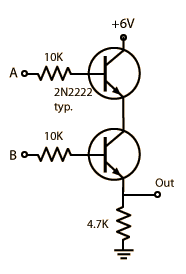

Transistor AND Gate
|  |
The use of transistors for the construction of logic gates depends upon their utility as fast switches. When the base-emitter diode is turned on enough to be driven into saturation, the collector voltage with respect to ground may be less than a volt and can be used as a logic 0 in the TTL logic family. |


| Basic Gates |
Electronics concepts
Digital Electronics
Reference
Mims
Digital Logic Circuits
| HyperPhysics*****Electricity and magnetism | R Nave |